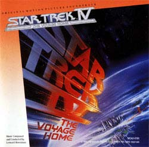

|

STAR TREK IV:
THE VOYAGE HOME
1986


Sinopse
comentada
Comentrios
Citaes
Efeitos
Especiais
Trilha Sonora
Trivia
Ficha
Tcnica
O
DVD
Meus Amigos,
Estamos
em Casa...

"Jornada nas Estrelas IV: A Volta para Casa" provavelmente , ainda hoje, o filme mais popular da conhecida srie. Dirigido em 1986 por Leonard Nimoy (que j dirigira o filme anterior), ele encerrou a trilogia iniciada em
"Jornada nas Estrelas II", que entre outras coisas envolve a morte do sr. Spock (o prprio Nimoy), a destruio da nave estelar Enterprise e a volta de Spock ao mundo dos vivos.
Diferentemente dos dois filmes que o antecederam, "Jornada nas Estrelas
IV", apesar de envolver a potencial destruio da Terra por uma sonda aliengena, possui uma trama mais leve e bem-humorada. O almirante Kirk (William Shatner) e seus comandados retornam Terra do final
do sculo 20, a fim de levar para o futuro um casal de baleias corcundas (extintas no sculo 23), a nica espcie capaz de se comunicar com a sonda e interromper sua ao destruidora. As situaes engraadas decorrem principalmente das tentativas de Kirk & cia. em passar despercebidos na San Francisco contempornea.
Rosenman j havia criado algumas interessantes partituras atonais para filmes de fico-cientfica, como "Viagem Fantstica" e dois longas da cinessrie "O Planeta dos Macacos". Aqui ele optou por um estilo mais tradicional e meldico, porm mesmo assim acabou compondo o score mais atpico da srie. A verdade que a msica de "A Volta para Casa" at que engana no filme, mas infelizmente decepciona em disco.
Como esta trilha foi indicada para o Oscar um mistrio -- foi mais uma daquelas indicaes estranhas, ainda mais se considerarmos que nenhuma das trilhas de
Jornada nas Estrelas subseqentes (e superiores) mereceram esta distino. aceitvel que a msica do quarto exemplar da franquia fosse diferente, dada a natureza mais leve e cmica do filme. Mas isto no justifica o enorme desvio que a trilha de Rosenman tomou, j que no apresenta qualquer momento pico ou semelhana com a msica que ouvimos nos outros filmes. H uma "falta de esprito" que crucial para avaliarmos o trabalho de Rosenman.
A msica otimista demais, deslocada e orquestralmente desinteressante. Mesmo o tema de Alexander Courage, que poderia remediar a situao, usado apenas um par de vezes. A melhor delas sem dvida ao final ("Home again/End Credits"), quando a tripulao "volta para casa" -- ou seja, a uma nova Enterprise, a NCC-1701-A.
E justia seja feita, para mim uma das melhores utilizaes do tema de Courage (no apenas da conhecida fanfarra) no cinema. De um modo geral a orquestra no fornece uma performance que empolgue, soando em alguns momentos mais como uma banda marcial, e o "Main Title" de Rosenman mais adequado para um documentrio do Discovery Channel sobre baleias.
Ouvindo a partitura, esta no capaz de transmitir qualquer sentido da ameaa latente, ou at mesmo da urgncia que a tripulao da Enterprise tem em cumprir a misso -- afinal, de seu sucesso depende o destino da Terra.
Falta ao nas "msicas de ao" de Rosenman, e seu uso de ritmos russos na faixa de Chekov, que busca tornar engraada uma situao que termina de modo
um tanto trgico, tolo e desnecessrio.
Na verdade, o som mais memorvel de todo o filme o canto das baleias: a msica, ao contrrio, ruma em velocidade de dobra para o limbo. Interessante tambm notar que duas faixas do grupo "The Yellowjackets", utilizadas para exemplificar, com ritmos pop/jazz, a cultura dos anos 80, estendem-se por quase 10 minutos em um lbum com apenas 35 minutos de durao! Sem dvida alguma, ao compararmos o universo musical da srie no cinema, antes e depois de
"Jornada nas Estrelas IV", constatamos que esta sua trilha sonora mais fraca. Ainda bem que, um par de anos mais tarde, William Shatner telefonou para Jerry Goldsmith e recolocou (pelo menos musicalmente) as coisas no lugar.